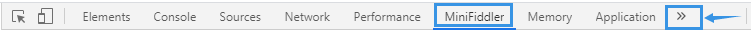
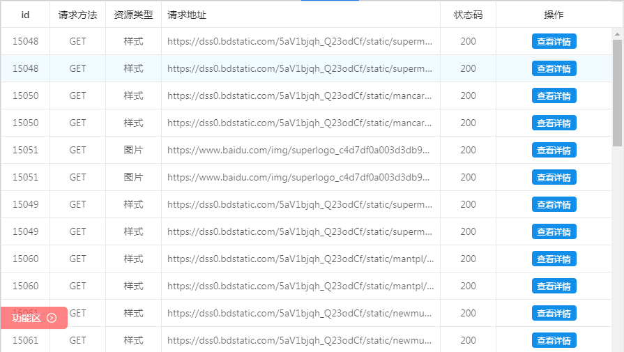
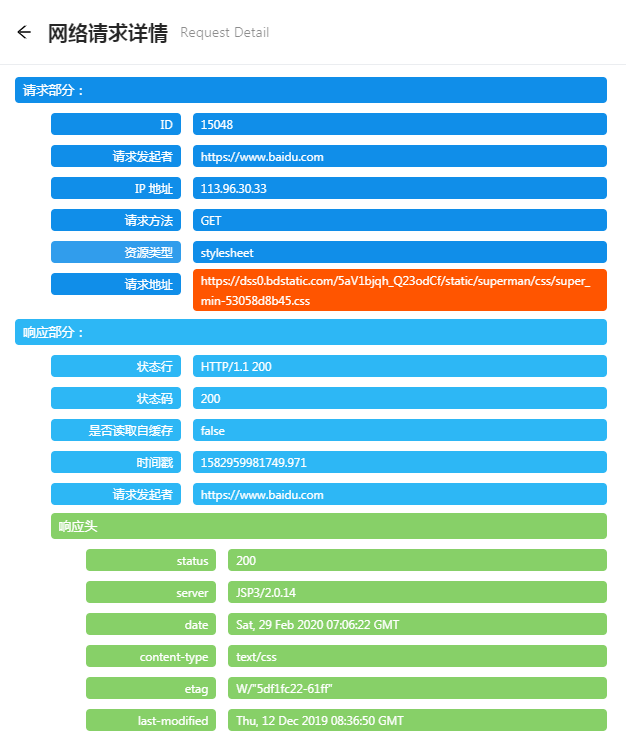
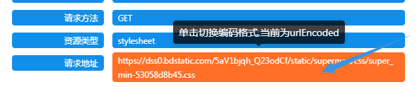
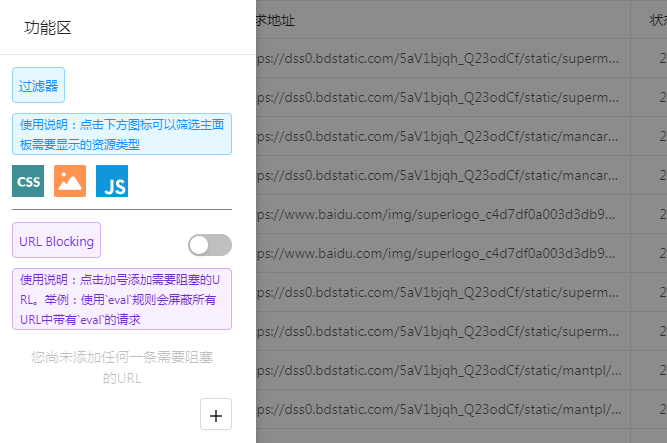
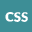

感谢安装 MiniFiddler.
插件的来历：插件的诞生离不开著名网络代理调试工具 Fiddler ，这款可以看成是 Fiddler 在 Chrome 端的移植。不过由于Chrome插件提供的API限制，目前该插件只实现了URL Blocking（URL阻塞）这个功能。
下面介绍插件的基本用法：
① 插件安装成功后，在浏览器右上角会显示插件的默认图标：
② 切换到任意一个页面，接着鼠标单击该图标，图标就会被点亮：
③ 接下来我们打开开发者工具，会注意到开发者工具面板多出个MiniFiddler 标签页
如果该标签页没有显示出来可以通过单击下方截图右边的那个箭头按钮，从下拉列表中进行选择

插件主页面包含6个字段，分别是id，请求方法，资源类型，请求地址，状态码和操作，还有一个功能区按钮。
表头字段是可拖动的，我们可以根据自己的需要自由调节列的大小。另外鼠标点击请求地址，可以对该地址进行复制

我们点击 查看详情 按钮，会进入查看详情页面。该页显示了请求的 请求主体 以及 响应主体

将鼠标移到 请求地址 上，会出现转换url编码的提示。单击请求地址栏可以切换编码方式（分别为 urlencoding 和 urldecoding）

最后我们讨论下功能区的功能 —— 在主页面单击功能区按钮后就会出现如下界面：

功能区包含两个功能：一个是 过滤器 ，另一个就是 URL Blocking
过滤器 可以控制我们主面板上显示什么类型的请求，默认全部显示。点击相应过滤器图标可以过滤掉这部分类型资源的显示。

URL Blocking 可以让我们添加需要阻塞的URL请求规则，比如我们添加了一条名叫"eval的"规则，那么接下来该Tab页所有包含eval这个字段的请求都会被我们这个插件屏蔽掉。（注意：该功能默认是关闭的，我们需要点击url blocking右边的switch来打开；另外我们可以添加多条规则，每条规则左边会显示一个checkbox，需要启用的规则我们把它勾上，不需要的我们把勾去掉即可）
最后，当我们定义好阻塞规则后，我们可以将开发者工具面板关掉。可以看到，关掉面板后浏览器右上角的MiniFiddler图标依然是亮着的，我们的阻塞规则仍在生效！
另外我们可以同时对多个不同Tab页定义相应的规则。这些规则在Tab页之间并不会相互影响。
另外我们可以同时对多个不同Tab页定义相应的规则。这些规则在Tab页之间并不会相互影响。